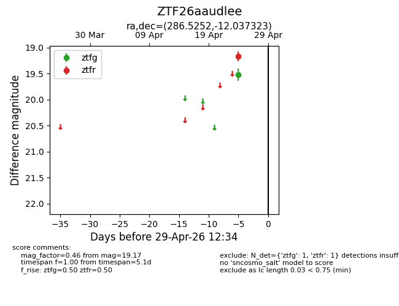
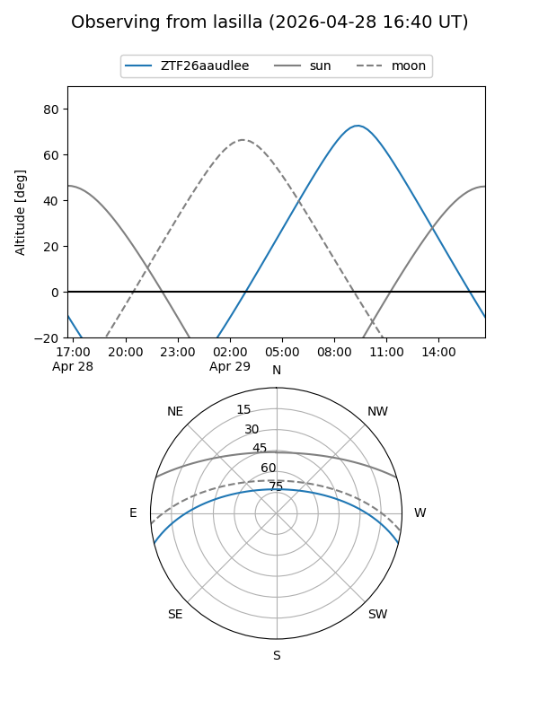
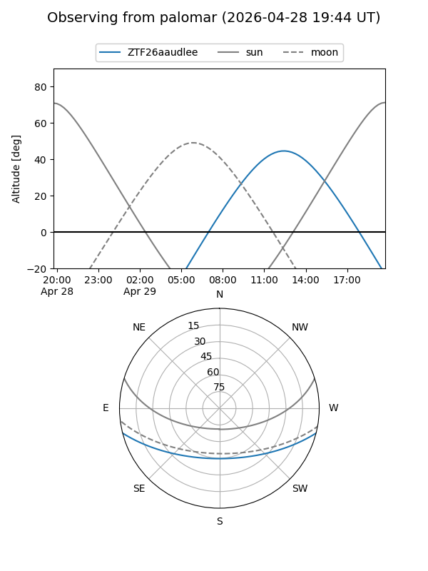

ZTF26aaudlee
Target ZTF26aaudlee at 2026-04-29 12:38
Aliases and brokers:
FINK: link
Lasair: link
ALeRCE: link
alt names
ZTF26aaudlee (ztf,fink_ztf)
Coordinates:
equatorial (ra, dec) = 286.5252,-12.03732
equatorial (HMS+DMS) = 19:06:06.05,-12:02:14.36
galactic (l, b) = (23.7883,-8.67013)
Flags:
Photometry:
last ztfg=19.52, ztfr=19.17
1 ztfg, 1 ztfr detections
Lightcurve

Visibility


Additional plots